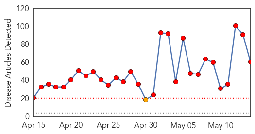
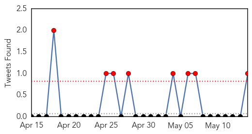
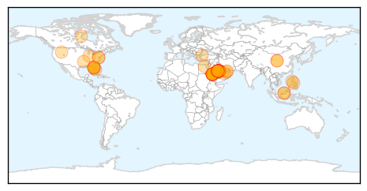
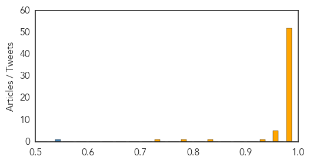

Toggle navigation
Early Warning
Daily Alerts
Middle East Respiratory Syndrome
May 14, 2014
Compare to:
-
Dengue Fever
Hemmorhagic Fever
Mold/Fungal Infection
Influenza
Meningitis
Pertussis / Whooping Cough
Cholera
Hepatitis
Chikungunya
Yellow Fever
Bubonic Plague
West Nile Virus
Swine Flu
Ebola
Measles
Unknown
Mumps
30 Day Trends
Web: 29
alerts
, 1
warnings
Twitter: 8
alerts
, 0
warnings
Top Articles:
Showing top 50 articles...
1.000
MERS advisories by CDC to be posted at 22 airports around the country
1.000
World Health Organization
1.000
9 things you need to know about MERS
1.000
World Health Organization
1.000
MERS virus raises concern
1.000
Nine things you need to know about MERS
1.000
Untitled Article
1.000
MERS threat 'significantly increased' but WHO says it's not yet a global health emergency
1.000
MERS virus patient may have infected hundreds after 4 HOURS in emergency waiting room
1.000
MERS outbreak becomes more urgent, WHO says
1.000
Florida health workers have symptoms after MERS patient contact
1.000
MERS 'urgency' not a public health emergency, WHO says
1.000
MERS 'urgency' not a public health emergency, WHO says
1.000
Officials 2nd U S case of MERS reported in Orlando
0.999
WHO holds emergency meeting on deadly MERS virus
0.999
MERS: five things to know
0.999
WHO holds emergency meeting on deadly MERS virus
0.999
2 Orlando health workers show symptoms
0.999
WHO holds emergency meeting on deadly Saudi MERS virus
0.999
2nd US case of MERS reported
0.999
MERS an international emergency? WHO deciding
0.999
WHO calls for stepping up alert against Mers
0.999
Doctor who travelled to Canada tests negative for MERS
0.999
Doctor who travelled to Canada tests negative for MERS
0.999
Doctor who travelled to Canada tests negative for MERS
0.999
Two Florida Hospital Workers Likely Exposed to MERS
0.999
Mers virus: Two negative tests in Florida
0.999
Expert panel convenes to advise WHO on whether MERS is a public health emergency
0.999
LAX Passengers Warned Of Emerging SARS-Like Virus « CBS Los Angeles
0.999
CDC Posts MERS Warning at U.S. Airports After More Cases Suspected
0.999
Two sick U.S. hospital workers test negative for MERS virus
0.999
Fears of MERS Epidemic Exaggerated – ECDC
0.998
MERS not yet a global health emergency
0.998
Two more people in Florida show symptoms of deadly MERS virus
0.998
Florida Healthcare Workers Being Tested For Deadly MERS Infection
0.998
MERS Watch: WHO Calls for Calm
0.998
Florida Hospital Says Workers Test Negative for Middle East Virus
0.997
Two healthcare workers in Florida may have MERS after treating patient
0.997
No restrictions on visiting schools, hospitals
0.996
Filipinos criticize govt for MERS ‘clearance’ condition - ‘No discrimination against OFWs’ - Kuwait Times
0.995
As the number of cases mounts, MERS is still a mystery virus
0.995
Gulf Daily News World News WHO alert over Mers virus
0.994
How the Deadly MERS Virus Has Spread Around the World (Infographic)
0.993
Middle East Online
0.990
SFO to Travelers: Watch Out For Middle East Respiratory Syndrome
0.989
MERS: 5 things to know
0.987
2-year-old is latest MERS victim
0.983
Middle East Respiratory Syndrome not global public health emergency
0.983
Local hospitals cautious of MERS virus
0.982
Private companies in UAE joining in battle to fight Mers coronavirus
Top Tweets:
0.538
RT: UPDATE: The two team members from Dr. P Phillips Hospital who were symptomatic have tested NEGATIVE for MERS-CoV. Orla…
Web/News Articles

Tweets

Article Locations

Article Confidences
